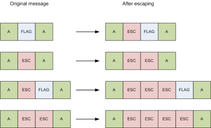
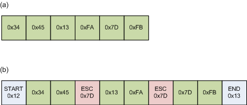
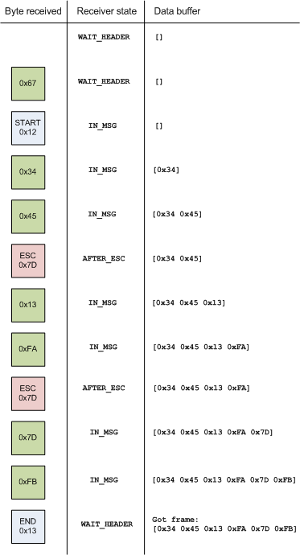

Introduction
In the previous post we've seen how to send and receive data on the serial port with Python and plot it live using a pretty GUI.
Notice that the sender script (sender_sim.py) is just sending one byte at a time. The "chunks" of data in the protocol between the sender and receiver are single bytes. This is simple and convenient, but hardly sufficient in the general sense. We want to be able to send multiple-byte data frames between the communicating parties.
However, there are some challenges that arise immediately:
- The receiver is just receiving a stream of bytes from the serial port. How does it know when a message begins or ends? How does it know how long the message is?
- Even more seriously, we can not assume a noise-free channel. This is real, physical hardware stuff. Bytes and whole chunks can and will be lost due to electrical noise. Worse, other bytes will be distorted (say, a single bit can be flipped due to noise).
To see how this can be done in a safe and tested manner, we first have to learn about the basics of the Data Link Layer in computer networks.
Data Link Layer
Given a physical layer that can transmit signals between devices, the job of the Data Link Layer [1] is (roughly stated) to transmit whole frames of data, with some means of assuring the integrity of the data (lack of errors). When we use sockets to communicate over TCP or UDP on the internet, the framing is taken care of deep in the hardware, and we don't even feel it. On the serial port, however, we must take care of the framing and error handling ourselves [2].
Framing
In chapter 3 of his "Computer Networks" textbook, Tanenbaum defines the following methods of framing:
- Inserting time gaps between frames
- Physical layer coding violations
- Character count
- Flag bytes with byte stuffing
- Flag bytes with bit stuffing
Methods (1) and (2) are only suitable for a hardware-implemented data link layer [3]. It is very difficult (read: impossible) to ensure timing when multiple layers of software (running on Windows!) are involved. (2) is an interesting hardware method - but out of the scope of this article.
Method (3) means specifying in the frame header the number of bytes in the frame. The trouble with this is that the count can be garbled by a transmission error. In such a case, it's very difficult to "resynchronize". This method is rarely used.
Methods (4) and (5) are somewhat similar. In this article I'll focus on (4), as (5) is not suitable for serial port communications.
Flag bytes with byte stuffing
Let's begin with a simple idea and develop it into a full, robust scheme.
Flag bytes are special byte values that denote when a frame begins and ends. Suppose that we want to be able to send frames of arbitrary length. A special start flag byte will denote the beginning of the frame, and an end flag byte will denote its end.
A question arises, however. Suppose that the value of the end flag is 0x98. What if the value 0x98 appears somewhere in the data? The protocol will get confused and end the message.
There is a simple solution to this problem that will be familiar to all programmers who know about escaping quotes and special characters in strings. It is called byte stuffing, or octet stuffing, or simply escaping [4]. The scheme goes as follows:
- Whenever a flag (start or end) byte appears in the data, we shall insert a special escape byte (ESC) before it. When the receiver sees an ESC, it knows to ignore it and not insert it into the actual data received (de-stuffing).
- Whenever ESC itself has to appear in the data, another ESC is prepended to it. The receiver removes the first one but keeps the second one [5].
Here are a few examples:
Note that we didn't specify what the data is - it's arbitrary and up the the protocol to decide. The only really required part of the data is some kind of error checking - a checksum, or better yet a CRC. This is customarily the last byte (or last word) of the frame, referring to all the bytes in the frame (in its un-stuffed form).
This scheme is quite robust: any lost byte (be it a flag, an escape, a data byte or a checksum byte) will cause the receiver to lose just one frame, after which it will resynchronize onto the start flag byte of the next one.
PPP
As a matter of fact, this method is a slight simplification of the Point-to-Point Protocol (PPP) which is used by most ISPs for providing ADSL internet to home users, so there's a good chance you're using it now to surf the net and read this article! The framing of PPP is defined in RFC 1662.
In particular, PPP does the following:
- Both the start and end flag bytes are 0x7E (they shouldn't really be different, if you think about it)
- The escape byte is 0x7D
- Whenever a flag or escape byte appears in the message, it is escaped by 0x7D and the byte itself is XOR-ed with 0x20. So, for example 0x7E becomes 0x7D 0x5E. Similarly 0x7D becomes 0x7D 0x5D. The receiver unsuffs the escape byte and XORs the next byte with 0x20 again to get the original [6].
An example
Let's now see a completely worked-out example that demonstrates how this works.
Suppose we define the following protocol:
- Start flag: 0x12
- End flag: 0x13
- Escape (DLE): 0x7D
And the sender wants to send the following data message (let's ignore its contents for the sake of the example - they're really not that important). The original data is in (a):
The data contains two flags that need to be escaped - an end flag at position 2 (counting from 0, of course!), and a DLE at position 4.
The sender's data link layer [7] turns the data into the frame shown in (b) - start and end flags are added, and in-message flags are escaped.
Let's see how the receiver handles such a frame. For demonstration, assume that the first byte the receiver draws from the serial port is not a real part of the message (we want to see how it handles this). In the following diagram, 'Receiver state' is the state of the receiver after the received byte. 'Data buffer' is the currently accumulated message buffer to pass to an upper level:
A few things to note:
- The "stray" byte before the header is ignored: according to the protocol each frame has to start with a header, so this isn't part of the frame.
- The start and end flags are not inserted into the data buffer
- Escapes (DLEs) are correctly handled by a special state
- When the frame is finished with an end flag, the receiver has a frame ready to pass to an upper level, and comes back waiting for a header - a new frame.
Finally, we see that the message received is exactly the message sent. All the protocol details (flags, escapes and so on) were transparently handled by the data link layer [8].
Conclusion
There are several methods of handling framing in communications, although most are unsuitable to be used on top of the serial port. Among the ones that are suitable, the most commonly used is byte stuffing. By defining a couple of "magic value" flags and careful rules of escaping, this framing methods is both robust and easy to implement as a software layer. It is also widely used as PPP depends on it.
Finally, it's important to remember that for a high level of robustness, it's required to add some kind of error checking into the protocol - such as computing a CRC on the message and appending it as the last word of the message, which the receiver can verify before deciding that the message is valid.

| [1] | The Data Link Layer is layer 2 in the OSI model. In the TCP/IP model it's simply called the "link layer". |
| [2] | The serial port can be configured to add parity bits to bytes. These days, this option is rarely used, because: |
- A single parity bit isn't a very strong means of detecting errors. 2-bit errors fool it.
- Error handling is usually done by stronger means at a higher level.
| [3] | For example Ethernet (802.3) uses 12 octets of idle characters between frames. |
| [4] | You might run into the term DLE - Data Link Escape, which means the same thing. I will use the acronyms DLE and ESC interchangeably. |
| [5] | Just like quotes and escape characters in strings! In C: "I say \"Hello\"". To escape the escape, repeat it: "Here comes the backslash: \\ - seen it?" |
| [6] | I'd love to hear why this XOR-ing is required. One simple reason I can think of is to prevent the flag and escape bytes appearing "on the line" even after they're escaped. Presumably this improves resynchronization if the escape byte is lost? |
| [7] | Which is just a fancy way to say "a protocol wrapping function", since the layer is implemented in software. |
| [8] | Such transparency is one of the greatest ideas of layered network protocols. So when we implement protocols in software, it's a good thing to keep in mind - transparency aids modularity and decoupling, it's a good thing. |